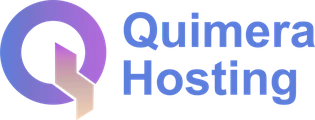
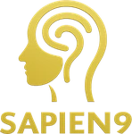

Santa Cruz
IngenieríaEl corazón que diseña, construye y sostiene tu tecnología.
Inicio›Nosotros
Quiénes somosGroup Quimera reúne unidades propias y aliados especializados para que tu empresa tenga todo bajo un mismo respaldo: la estrategia, el software, la infraestructura y la seguridad.
Estrategia, tecnología y la consultoría que define qué conviene construir antes de invertir un peso. Más de 100 marcas atendidas.
groupquimera.com ↗Construcción de sistemas y plataformas a la medida de cada empresa.
quimeracloud.com ↗
Servidores y presencia web propia, funcionando las 24 horas.
quimerahosting.com ↗
Agentes de IA hechos a medida para equipos y operaciones. Nuestra empresa en Estados Unidos, para trabajar con estándar internacional.
techagents.dev ↗
Protección de nivel enterprise para toda tu operación.
sapien9.com ↗Un equipo binacional con aliados de primer nivel en cuatro plazas clave.
El corazón que diseña, construye y sostiene tu tecnología.
Nuestra empresa en EE.UU. para operar con estándar internacional.
Alianza con Sapien9 para proteger toda tu operación.
Equipo y capacidad de desarrollo que suma al de Santa Cruz.
Contornos: © OpenStreetMap contributors · ODbL
Founder & CEO. Es quien da la charla, quien toma el diagnóstico y quien firma lo que se construye. Si trabajás con nosotros, hablás con él — no con un ejecutivo de cuentas que repite lo que le pasaron.


«Agradecemos por su participación como Speaker a Lic. Johnny Ferrante. Por su compromiso con el liderazgo femenino.»
No es una autodescripción: es una placa entregada por una cámara empresarial frente a su propia sala. Cuando alguien nos escucha hablar de inteligencia artificial, esta web es donde la conversación sigue.

Construir es fácil; sostener es lo difícil. Nos hacemos cargo de que tu sistema siga funcionando, seguro y creciendo con vos.
Algunas de las marcas con las que trabajamos
Tomémonos 30 minutos. Salís con una idea clara de cómo se vería tu empresa con sus propios sistemas, sin compromiso.
Conversemos →Lo marcado en ámbar es lo que no pude verificar o lo que hoy está falso en producción. Nada está inventado.
Nuevo · las unidades con sus marcas realesquimeracloud.com abre «Portal Home — Quimera Cloud», que es una tienda de hosting, no «construcción de sistemas y plataformas a la medida» como dice la ficha. O se corrige la descripción, o esa unidad necesita otro destino.groupquimera.com no tiene etiqueta <title>. Sale vacío en los resultados de búsqueda y en la pestaña del navegador. Es un arreglo de un minuto en ese sitio.<style> de index.html a quimera.css, porque ahora lo usan las dos páginas. Si tocás el bloque, se toca en un solo lugar.Quimera-Tech-Capacidades. La sección de Johnny sale del video de CAMEBOL y de la placa fotografiada.